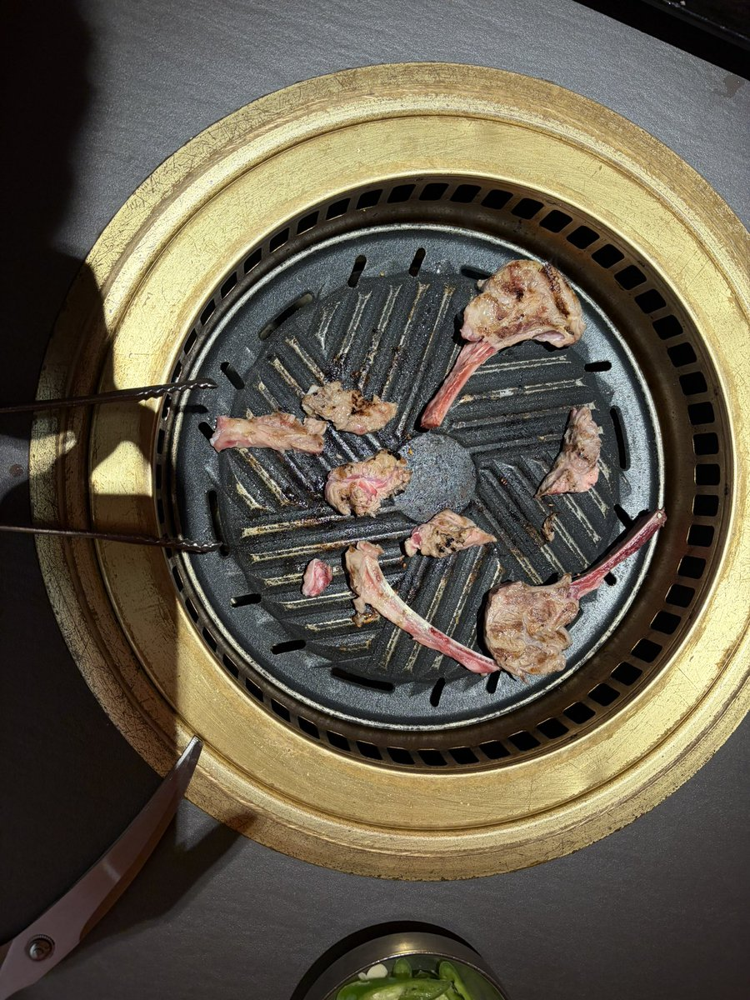

大狐帝国史官邹智萱（笔名段歌文）
@Rococo90933671
@KafuuChinoDL 如果在乎体重和心疼钱，像我，就永远不碰。碰了再在乎体重和心疼钱，那是金钱和情绪的双输。
该吃的时候享受当下，才是真正的自律。我是认真的，因为自律是不需要感到憋屈的，感到憋屈就不是真正的自律😋

智乃
@KafuuChinoDL
吃之前还在心疼钱
吃以后感觉真的特别开心！
真的那种发自内心的开心！
吃的特别爽，不知道为什么
明明这周已经吃了两次烤肉一次火锅了x
不过姑且不用担心体重和钱的问题就是，毕竟钱花在这上头总比炒币强，体重的话…我能跑8公里x https://t.co/lBfYs2JwcM https://t.co/bVI245TEGQ